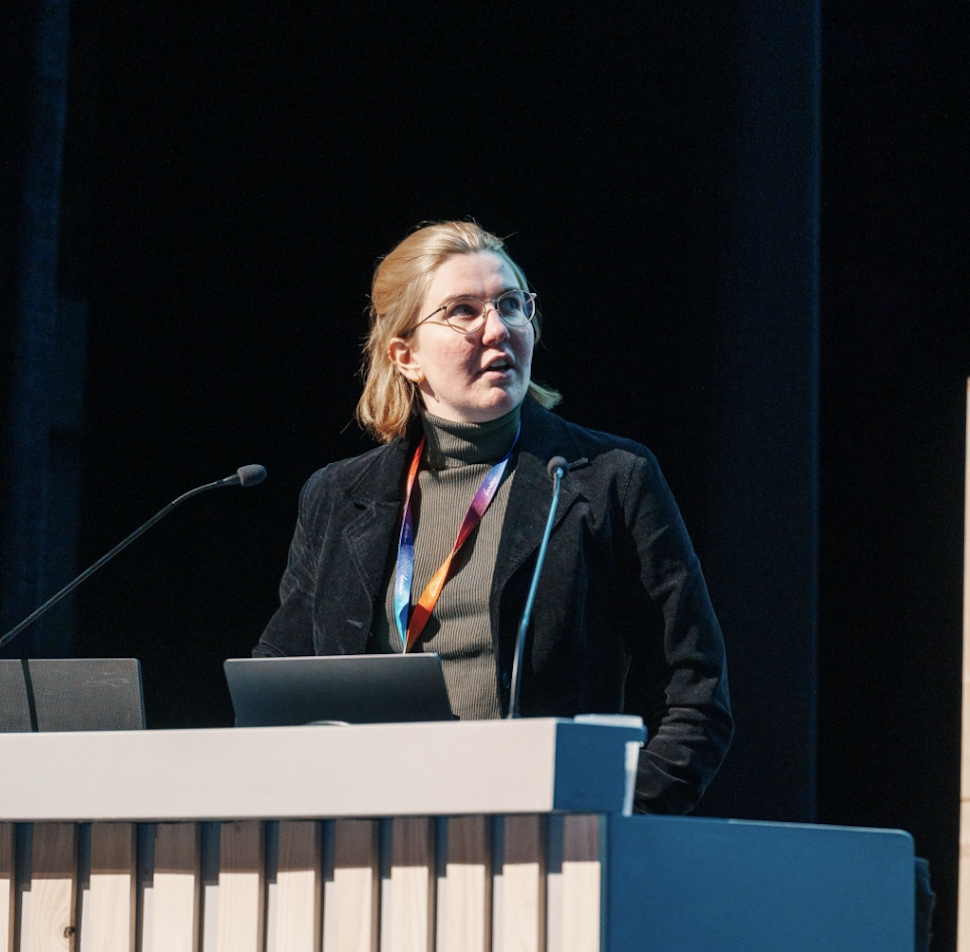
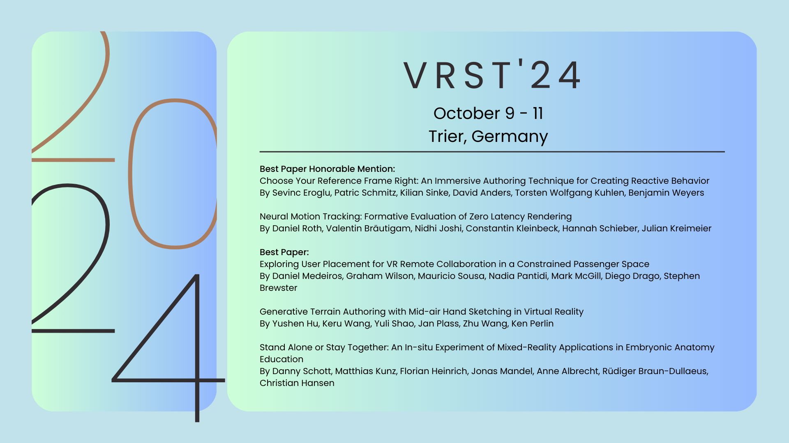

Hannah Schieber
PhD Student in Computer Vision & Extended Reality
Technical University of Munich (TUM) · Friedrich-Alexander Universität Erlangen-Nürnberg (FAU)
Contact
hannah dot schieber @ tum dot de
Google Scholar ·
Bluesky ·
Twitter ·
GitHub ·
CV
Research Focus
My research focuses on novel view synthesis for 3D content creation and guidance in extended reality.
Affiliation
I am a PhD student under the supervision of Prof. Daniel Roth at HEX Lab at TUM / FAU.
Visiting Research
I was a visiting PhD student at the University of Otago, New Zealand (2024), working on outdoor 3D scene creation for VR using semantic Gaussian Splatting under the supervision of Prof. Stefanie Zollmann.
Education
- 2015 - 2019, B.Sc. at HS Aalen (Computer Science).
- 2019 - 2021, M.Sc. at TH Ingolstadt (Computer Science) and @AUDI AG.
Parts of my master’s thesis were published at IEEE IV 2022 - 2021 - now, PhD FAU Erlangen-Nürnberg /TU München.
Working on immersive 3D/4D visualizations pushing the boundaries in novel view synthesis. Publications can be found below or on Google Scholar

News & Highlights
- [09/2026] Visiting Stanford Wu Tsai Institute
- [08/2026] Early accepted MICCAI 2026 Arxiv (Preprint) (co-author)
- [06/2026] One paper accepted at IEEE RA-L (first-author)
- [05/2026] Attending ICVSS this year 🥳
- [05/2026] One workshop paper accepted at IEEE ICRA SRRA (shared first author)
- [01/2025] Two papers accepted at IEEE VR (first author and co-author)
- [01/2025] IEEE RA-L paper to be presented at ICRA 2025
- [04/2024] CVPR 2024 Highlight paper (shared first author)
Teaching
Seminars
- [2024–2025] Computer Vision in the Operating Room @ TUM
- [2024] Praktikum in 3D Computer Vision @ CAMP TUM
- [2023–2024] Advanced Topics in 3D Computer Vision @ CAMP TUM
- [2022–2024] Modern Computer Vision Methods @ CAMP TUM
Funding
- [07/2024–01/2025] d.hip stipend
- [02/2024–06/2024] DAAD stipend (New Zealand)
- [09/2021–01/2024] d.hip stipend
Awards & Drawings
Best Paper Honorable Mention

Best Project MARSS 2021